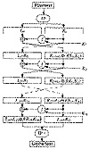
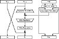

| Previous | Table of Contents | Next |
DES is a block cipher; it encrypts data in 64-bit blocks. A 64-bit block of plaintext goes in one end of the algorithm and a 64-bit block of ciphertext comes out the other end. DES is a symmetric algorithm: The same algorithm and key are used for both encryption and decryption (except for minor differences in the key schedule).
The key length is 56 bits. (The key is usually expressed as a 64-bit number, but every eighth bit is used for parity checking and is ignored. These parity bits are the least-significant bits of the key bytes.) The key can be any 56-bit number and can be changed at any time. A handful of numbers are considered weak keys, but they can easily be avoided. All security rests within the key.
At its simplest level, the algorithm is nothing more than a combination of the two basic techniques of encryption: confusion and diffusion. The fundamental building block of DES is a single combination of these techniques (a substitution followed by a permutation) on the text, based on the key. This is known as a round. DES has 16 rounds; it applies the same combination of techniques on the plaintext block 16 times (see Figure 12.1).
The algorithm uses only standard arithmetic and logical operations on numbers of 64 bits at most, so it was easily implemented in late 1970s hardware technology. The repetitive nature of the algorithm makes it ideal for use on a special-purpose chip. Initial software implementations were clumsy, but current implementations are better.
Outline of the Algorithm
DES operates on a 64-bit block of plaintext. After an initial permutation, the block is broken into a right half and a left half, each 32 bits long. Then there are 16 rounds of identical operations, called Function f, in which the data are combined with the key. After the sixteenth round, the right and left halves are joined, and a final permutation (the inverse of the initial permutation) finishes off the algorithm.
In each round (see Figure 12.2), the key bits are shifted, and then 48 bits are selected from the 56 bits of the key. The right half of the data is expanded to 48 bits via an expansion permutation, combined with 48 bits of a shifted and permuted key via an XOR, sent through 8 S-boxes producing 32 new bits, and permuted again. These four operations make up Function f. The output of Function f is then combined with the left half via another XOR. The result of these operations becomes the new right half; the old right half becomes the new left half. These operations are repeated 16 times, making 16 rounds of DES.
If Bi is the result of the ith iteration, Li and Ri are the left and right halves of Bi, Ki is the 48-bit key for round i, and f is the function that does all the substituting and permuting and XORing with the key, then a round looks like:

Figure 12.1 DES.
The Initial Permutation
The initial permutation occurs before round 1; it transposes the input block as described in Table 12.1. This table, like all the other tables in this chapter, should be read left to right, top to bottom. For example, the initial permutation moves bit 58 of the plaintext to bit position 1, bit 50 to bit position 2, bit 42 to bit position 3, and so forth.
The initial permutation and the corresponding final permutation do not affect DES’s security. (As near as anyone can tell, its primary purpose is to make it easier to load plaintext and ciphertext data into a DES chip in byte-sized pieces. Remember that DES predates 16-bit or 32-bit microprocessor busses.) Since this bit-wise permutation is difficult in software (although it is trivial in hardware), many software implementations of DES leave out both the initial and final permutations. While this new algorithm is no less secure than DES, it does not follow the DES standard and should not be called DES.

Figure 12.2 One round of DES.
The Key Transformation
Initially, the 64-bit DES key is reduced to a 56-bit key by ignoring every eighth bit. This is described in Table 12.2. These bits can be used as parity check to ensure the key is error-free. After the 56-bit key is extracted, a different 48-bit subkey is generated for each of the 16 rounds of DES. These subkeys, Ki are determined in the following manner.
First, the 56-bit key is divided into two 28-bit halves. Then, the halves are circularly shifted left by either one or two bits, depending on the round. This shift is given in Table 12.3.
| Table 12.1 Initial Permutation | |||||||||||||||
|---|---|---|---|---|---|---|---|---|---|---|---|---|---|---|---|
| 58, | 50, | 42, | 34, | 26, | 18, | 10, | 2, | 60, | 52, | 44, | 36, | 28, | 20, | 12, | 4, |
| 62, | 54, | 46, | 38, | 30, | 22, | 14, | 6, | 64, | 56, | 48, | 40, | 32, | 24, | 16, | 8, |
| 57, | 49, | 41, | 33, | 25, | 17, | 9, | 1, | 59, | 51, | 43, | 35, | 27, | 19, | 11, | 3, |
| 61, | 53, | 45, | 37, | 29, | 21, | 13, | 5, | 63, | 55, | 47, | 39, | 31, | 23, | 15, | 7 |
| Previous | Table of Contents | Next |
){kind=link}
){kind=link}
){kind=link}
){kind=link}